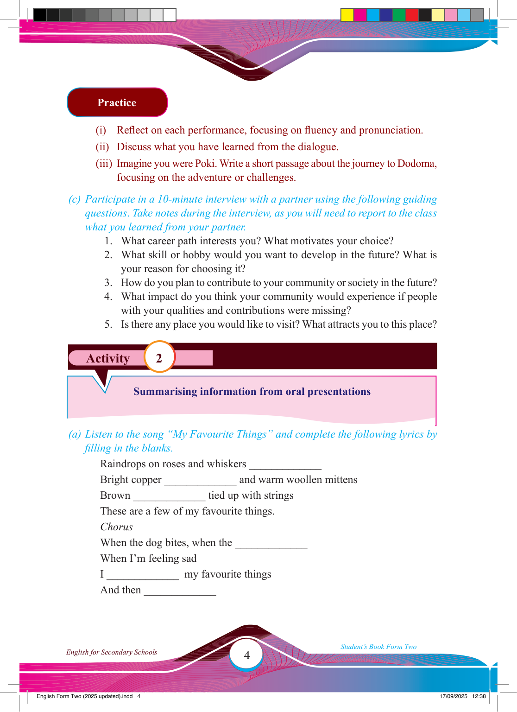

4
Student’s Book Form Two
English for Secondary Schools
Activity 2
Practice
(i) Refl ect on each performance, focusing on fl uency and pronunciation.
(ii) Discuss what you have learned from the dialogue.
(iii) Imagine you were Poki. Write a short passage about the journey to Dodoma, focusing on the adventure or challenges.
(c) Participate in a 10-minute interview with a partner using the following guiding questions. Take notes during the interview, as you will need to report to the class what you learned from your partner.
1. What career path interests you? What motivates your choice?
2. What skill or hobby would you want to develop in the future? What is your reason for choosing it?
3. How do you plan to contribute to your community or society in the future?
4. What impact do you think your community would experience if people with your qualities and contributions were missing?
5. Is there any place you would like to visit? What attracts you to this place?
Summarising information from oral presentations
(a) Listen to the song “My Favourite Things” and complete the following lyrics by fi lling in the blanks.
Raindrops on roses and whiskers _____________
Bright copper _____________ and warm woollen mittens
Brown _____________ tied up with strings
These are a few of my favourite things.
Chorus
When the dog bites, when the _____________
When I’m feeling sad
I _____________ my favourite things
And then _____________
17/09/2025 12:38